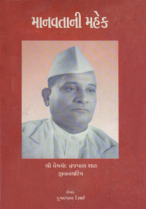
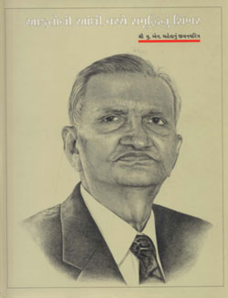
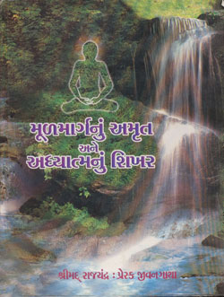
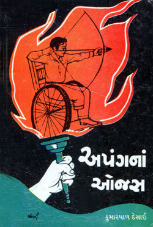
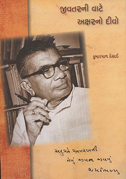

ચરિત્ર સાહિત્ય
લાલગુલાબ (૧૯૬૫) ; મહામાનવ શાસ્ત્રી (૧૯૬૬) ; અપંગનાં ઓજસ (૧૯૭૩) ; વીર રામમૂર્તિ (૧૯૭૬) ; બાળકોના બુદ્ધિસાગરસૂરિજી (૧૯૭૮) ; સી.કે. નાયડુ (૧૯૭૯) ; ફિરાક ગોરખપુરી (૧૯૮૪) ; ભગવાન ઋ।ભદેવ (૧૯૮૭) ; ભગવાન મલ્લિનાથ (૧૯૮૯) ; આતમજ્ઞાની શ્રમણ કહાવે (૧૯૮૯) ; અંગૂઠે અમૃત વસે (૧૯૯૨) લોખંડી દાદાજી (૧૯૯૨) ; શ્રી મહાવીર જીવનદર્શન (૧૯૯૮) ; જિનશાસનની કીર્તિગાથા (૧૯૯૮) ; લાલા અમરનાથ (૧૯૯૯) ; આફતોની આંધી વચ્ચે સમૃદ્ધિનું શિખર (૧૯૯૯) ; મૂળમાર્ગનું અમૃત અને અધ્યાત્મનું શિખર (૨૦૦૦) ; માનવતાની મહેંક (પ્રેમચંદ વ્રજપાળ શાહનું જીવનચરિત્ર) (૨૦૦૦) ; તીર્થંક મહાવીર (૨૦૦૪) ; ભારતીય સંસ્કૃતિનો આત્મા (વીરચંદ રાઘવજી ગાંધીનું ચરિત્ર) (૨૦૦૯) જીવતરની વાટે અક્ષરનો દીવો (2014) માટીએ ઘડીયા માનવી (2016) તન અપંગ મન અડિખમ (2016) જીવી જાણનારા (2016) |
||
|  |
શ્રી પ્રેમચંદવ્રજપાળ શાહે આફ્રિકામાં દૂર દૂરનાં જંગલોમાં વસેલા અર્ધભૂખ્યા અને અર્ધનગ્ન લોકો માટે ઉદ્યોગોની સ્થાપના કરી. સાહસ અને હિંમતનો સમન્વય એટલે પ્રેમચંદભાઈ. આફ્રિકામાં વસતા ગુજરાતીઓના રિવાજો, ગાંધીજીનું સ્વાતંત્ર્ય-આંદોલન અને એ વિચારોની ગુજરાતીઓ પર પડેલી અસર પણ આ પુસ્તકની વિશેષતા છે. |
|
|  |
ઉદ્યોગપતિ શ્રી યુ.એન. મહેતાની જીવનકથા ‘આફતોની આંધી વચ્ચે સમૃદ્ધિનું શિખર’ એક અનોખી જીવનકથા છે. પુરુષાર્થના બળે સામાન્ય માનવીમાંથી સમાજમાં ઉચ્ચ સ્થાન સુધી કેવી રીતે પહોંચી શકાય તેની કથા. શૂન્યમાંથી સર્જન કરનાર, મુશ્કેલીઓમાંથી મહાન સિદ્ધિ મેળવનાર અને ચારે બાજુ ફેલાયેલા નિરાશાના કાળા ડિબાંગ અંધકારમાંથી જીવનસાફલ્યનો ઉજાસ મેળવનાર સ્વ. યુ.એન. મહેતાની આ જીવનકથા ચોપાસ મુશ્કેલીઓથી ઘેરાઈ ગયેલા માનવીને ઝઝૂમવાનું બળ આપે તેવી છે. |
|
|  |
‘મૂળમાર્ગનું અમૃત અને અધ્યાત્મનું શિખર’ એ શ્રીમદ્ રાજચંદ્રના જીવનની ગાથા આલેખતું પુસ્તક છે. આ પુસ્તકમાં શ્રીમદ્ રાજચંદ્રના વૈરાગ્યની તીવ્રતા, બોધબીજનું અપૂર્વપણું અને સમ્યગ્ જ્ઞાન, સમ્યક્ દર્શન, અને સમ્યક્ ચારિત્ર દ્વારા થયેલી એમની અધ્યાત્મયાત્રાની ઝાંખી આપવામાં આવી છે. મહાત્મા ગાંધીજીના આધ્યાત્મિક માર્ગદર્શક શ્રીમદ્ રાજચંદ્રનાં પદો ઉપરાંત એમનાં ઉપદેશવચનો પાને પાને ચિત્ર ધરાવતાં આ ગ્રંથમાં મળે છે. |
|
|  |
શારીરિક ક્ષતિ ઓળંગીને અનોખી સિદ્ધિ મેળવનારા રમતવીરોની સંઘર્ષભરી મથામણ-કથા છે. વિક્લાંગ વ્યક્તિ ચિત્રકાર કે સંગીતકાર બને, પરંતુ આ ગ્રંથમાં જેમાં શરીરબળનો મહિમા છે એવા રમતગમતના ક્ષેત્રમાં સિદ્ધિ મેળવનારા વિક્લાંગોની કથા છે. લેખકના આ અત્યંત પ્રસિદ્ધ એવા પુસ્તકની સાતેક આવૃત્તિ થઈ છે અને એમાંથી પ્રેરણા મેળવીને અનેક લોકોએ પોતાના જીવનમા આવેલી હતાશા અને નિરાશા ખંખેરીને પ્રગતિ કરી છે. આ પુસ્તકનો હિંદી અને અંગ્રેજી અનુવાદ પણ થયો છે. |
|
|  |
આ ચરિત્રનાયક ભીખો, ભીખાલાલા, બાલાભાઈ અને છેવટે ‘જયભિખ્ખુ’ બનવાની આખી પ્રક્રિયામાં ધીરે ધીરે નિજાનંદે ઊઘડતી સો પાંદડીઓવાળા બટમોગરા જેવું આહ્ લાદક વ્યક્તિત્વ કઈ રીતે વિકસાવે છે એની આ કથા જેટલી રસપૂર્ણ છે એટલી જ પ્રેરણાત્મક છે. વાચકને ક્યાંય ભાર ન વરતાય છતાં એના સ્મૃતિભંડારમાં કાયમ માટે અનાયાસે જળવાઈ રહે એવી સર્જાઈ છે. જયભિખ્ખુનું શૈશવ, યૌવન અને પ્રૌઢાવસ્તા આ પૃષ્ઠોમાં સજીવ થાય છે, તે સાથે એમના મિત્રો, અવનવા પ્રસંગો દ્વારા થતું સમાજદર્શન અને એક આખો જમાનો બધું જ આપણા માનસપટ પર અંકાઈ જાય છે. એ દૃષ્ટિએ આ પુસ્તકનું દસ્તાવેજી મૂલ્ય પણ મહત્ત્વનું છે. |
|
‘કુમારપાળ ચરિત્રનિબંધોના લેખક છે. એમણે એવાં ચરિત્રો પસંદ કર્યા છે કે જેમનાં વ્યક્તિત્વ ખરેખર અનુકરણીય બની રહે. એવા ભવ્ય વ્યક્તિત્વવાળા, ઉદાત્ત ભાવનાવાળા અને દેશ માટે કશુંક કરી ગયેલા આ સમાજના મોભાનું સ્થાન પ્રાપ્ત કરી શકે એવા લોકોને પસંદ કરીને એમણે ચરિત્રો લખ્યાં છે. ચરિત્રગ્રંથોવિષયક એમનું પ્રદાન પણ ખરા અર્થમાં ગુજરાતી સાહિત્યમાં અત્યંત મહત્ત્વનું છે.’ |